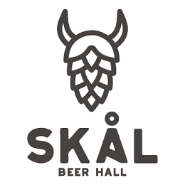
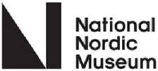
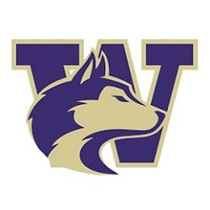

Explore Your Local Resources
Skal Hall
Skål named for the Norwegian word for “cheer” is an interpretation of what a Viking mead hall would be like today with a rotating selection of local and Scandinavian craft beer, cider, mead, wine, & aquavit cocktails. A true gathering place for the community the workshops and class that introduce Norwegian culture and history to the neighborhood.
Nordic National Museum
The National Nordic Museum shares Nordic culture with people of all ages and backgrounds by exhibiting art and objects, preserving collections, providing educational and cultural experiences, and serving as a community gathering place.
University of Washington
The Department of Scandinavian Studies at the University of Washington offers a variety of classes on Norwegian study, as well as opportunities for students to continue their study of Norwegian language, literature, culture, and society and other Scandinavian Studies. These include courses on Nordic and Baltic languages, literatures, culture, and society.